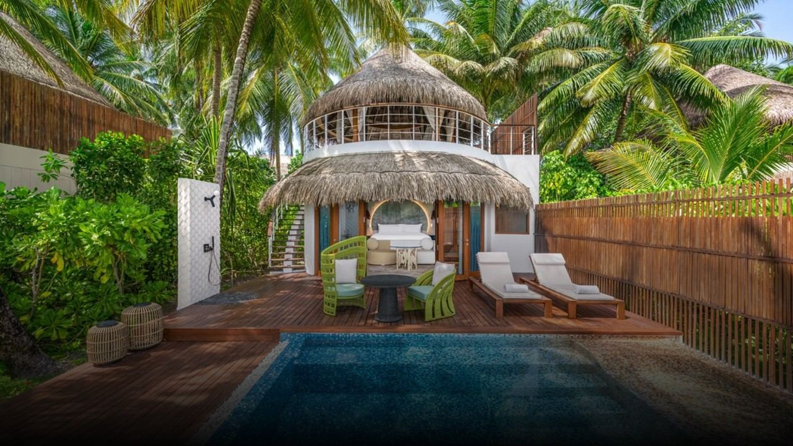
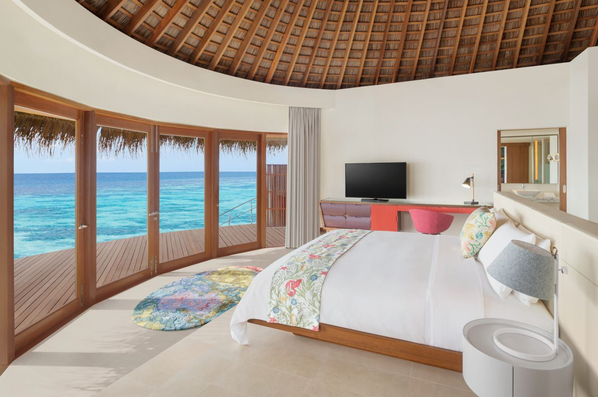
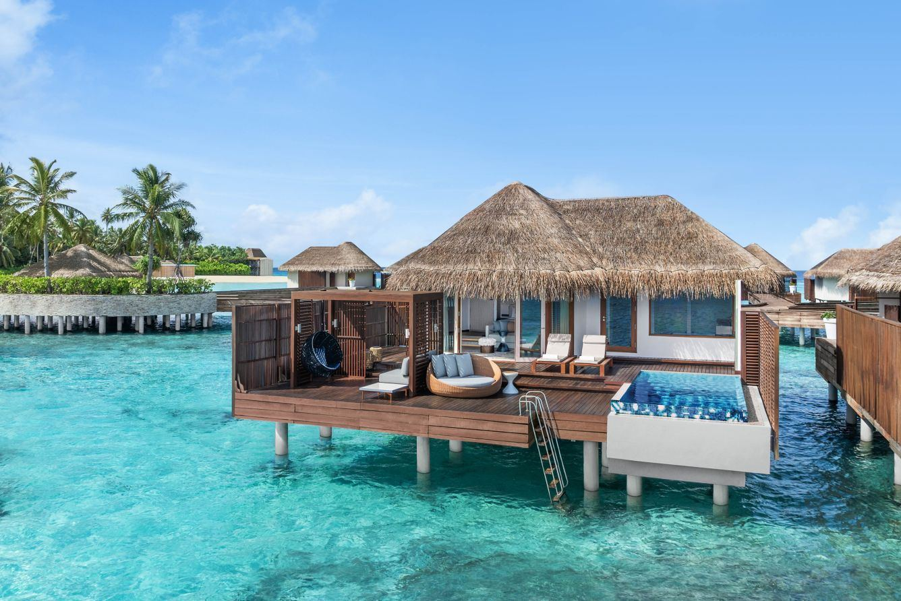
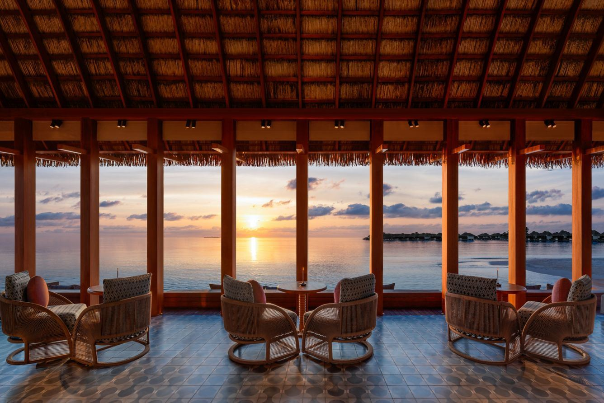
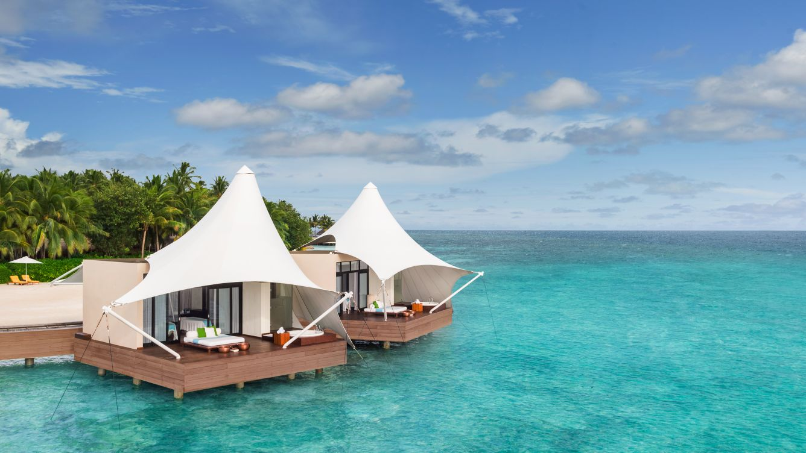

Лайфстайл-курорт с активным ритмом
W Maldives - более живой и современный формат Мальдив: музыка, океан, дайвинг, водные активности и расслабленная атмосфера без лишней классической формальности.
Отель хорошо работает для пар и компаний, которым хочется не только виллу у воды, но и динамику: бары, вечерние сценарии, спорт и яркую визуальную подачу.
- Адрес
Fesdu Island, North Ari Atoll
- Телефон
по запросу
- Трансфер
гидросамолет от Velana
- Формат
пляжные и водные виллы





Современный островной формат
Рестораны и бары поддерживают динамичный стиль отеля: легкие дневные форматы, ужины у воды и вечерние сценарии для пары или компании.
Дайвинг, музыка и океан
SPA, дайвинг, водные активности, морские прогулки и вечерние события делают отель хорошим выбором для активной поездки.
Для живого отдыха
W Maldives подойдет тем, кто хочет уйти от слишком спокойного образа Мальдив и добавить в поездку музыку, активность и современный лайфстайл.